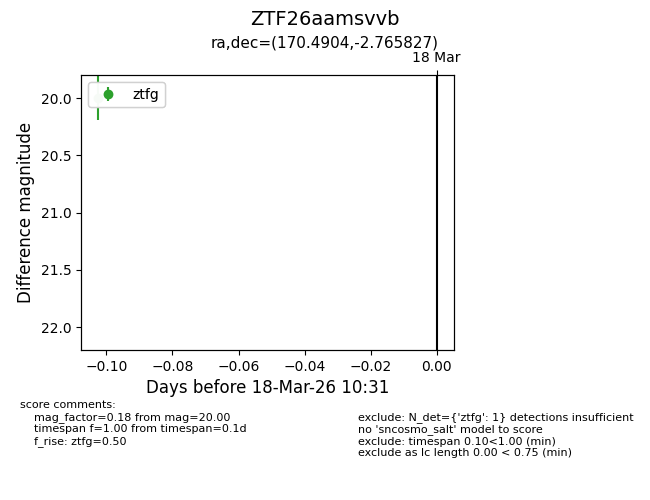
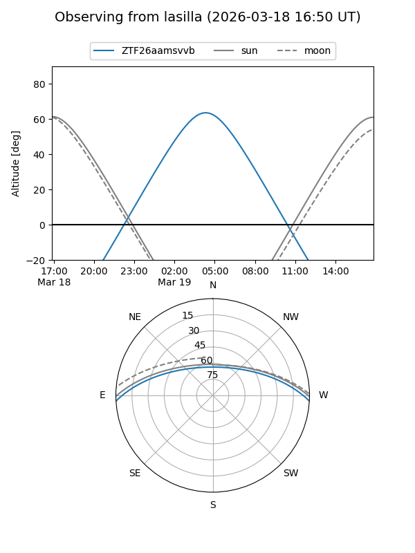
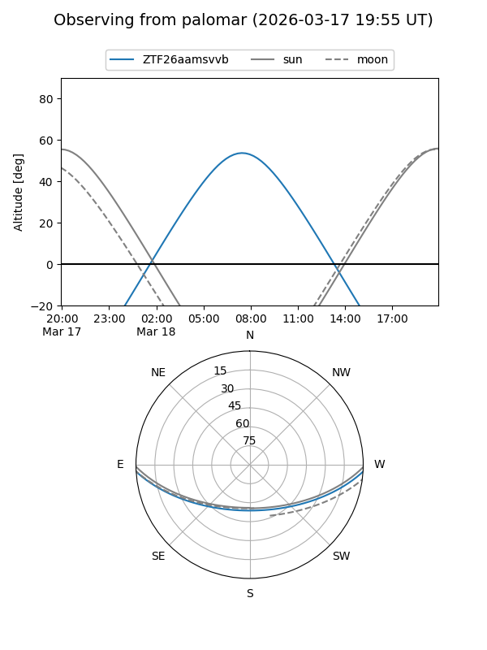

ZTF26aamsvvb
Target ZTF26aamsvvb at 2026-03-18 10:33
Aliases and brokers:
FINK: link
Lasair: link
ALeRCE: link
alt names
ZTF26aamsvvb (ztf,fink_ztf)
Coordinates:
equatorial (ra, dec) = 170.4904,-2.76583
equatorial (HMS+DMS) = 11:21:57.70,-02:45:56.98
galactic (l, b) = (263.6138,+53.13547)
Flags:
Photometry:
last ztfg=20.00
1 ztfg detections
Lightcurve

Visibility


Additional plots